At a glance
Upload a CSV and the investigator explores it for you. It profiles the data, scores its quality, detects anomalies and correlations, and presents confidence-scored, evidence-backed findings that you can challenge and re-test.
Overview
Traditional BI tools answer only the questions users already know to ask, so analysts spend most of their time figuring out where to look. AI Data Investigator flips the model from query-driven to reasoning-driven analytics.
It runs a structured investigation, forms findings, backs each one with evidence and a validation query, and keeps the human in charge through a challenge-and-re-analyse loop.
The current build is a working frontend MVP. Its investigation engine is deterministic and rule-based, which makes it fully explainable and free to run. It is designed so an LLM layer can later handle hypothesis generation and natural-language reasoning, with the rule engine kept as an offline fallback.
The problem
- Dashboards show what happened, but rarely point to where the interesting story is.
- Non-analysts (founders, ops leads, growth teams) need board-ready answers quickly.
- "AI insights" are often black boxes with no evidence, which makes them hard to trust.
The solution
A goal-driven "mission" system. You pick an objective, and the investigator works through a visible 7-step process:
profiling → quality scoring → pattern detection → hypothesis generation → query execution → validation → insight generation
Each finding is typed (anomaly, trend, correlation, risk, opportunity) and comes with:
- a confidence score
- supporting evidence
- a validation query
- a recommended next action
Users can challenge any finding. The engine re-runs the analysis and shows how confidence changed.
Key features
Data input & exploration
- CSV upload (file picker and drag-and-drop) plus 3 built-in sample datasets: SaaS Revenue, Commerce Returns and Support Churn
- Column profiling (type, missing values, numeric stats), a column detail view, and a searchable, sortable preview table
Data quality
- A trust score built from completeness, consistency, uniqueness, validity and anomaly risk, with diagnostics
Missions (7 modes)
- Revenue leaks, Explain churn, Detect fraud, Audit quality, Growth opportunities, Board report, Compare periods
Investigation
- A 7-step investigation timeline with a terminal-style log
- Typed insight cards with confidence, evidence, validation query and next action, plus type filters
Reasoning & collaboration
- Evidence Courtroom: causal ranking and a confidence timeline
- Experiments: follow-up tests that strengthen or weaken a finding
- What-if simulator: apply a percentage change to a column and see the projected impact
- Challenge mode: submit an assumption and get a re-analysis stream, a confidence delta and a challenge history
- Trust ledger: an audit trail for each finding
- Rule-based "Ask the dataset" Q&A and a text-to-SQL generator
Output
- An executive summary with recommendations, a text report export, an in-session history, an observability panel, and a light/dark theme
How it works
The core engine (investigator-core) is a pure TypeScript module. It takes parsed rows and produces profiles, quality scores, statistical findings and mission-specific insights. The UI renders the investigation as a timeline and feeds user challenges back into the engine.

Tech stack
| Layer | Technologies |
|---|---|
| Language | TypeScript compiled to ES modules |
| Frontend | Vanilla TypeScript + DOM APIs, custom CSS (light/dark) |
| Analytics engine | Hand-written CSV parser, column profiling, descriptive stats, Pearson correlation, anomaly detection, quality scoring |
| Server | Node.js built-in http static server with a path-traversal guard |
| Testing | Node built-in test runner (7 passing tests) |
| Planned | React/Next.js, FastAPI + Pandas, DuckDB/Postgres, LLM API with tool calling |
Engineering highlights
- A dependency-free analytics engine: CSV parsing, profiling, correlation, anomaly detection and quality scoring written from scratch in TypeScript.
- Explainability by design: every insight carries evidence, a confidence score and a validation query.
- A human-in-the-loop challenge loop that re-runs analysis and visualises confidence deltas.
- Goal-driven mission architecture: 7 analysis modes share one investigation pipeline.
- An AI-ready architecture: the deterministic engine is designed as the tool layer that a future LLM agent would plan against and call.
- A lightweight static server with path-traversal protection, and core logic covered by automated tests.
Challenges & what I learned
- Making insights trustworthy. Approach: every finding shows its evidence, a validation query and a trust-ledger entry. Lesson: users trust analysis they can check, not analysis that merely sounds confident.
- Keeping humans in control. Approach: challenge mode and experiments let users push back and watch confidence move. Lesson: collaboration with the user builds more trust than autonomy.
- Building a reasoning UX before adding LLM cost. Approach: I proved the investigation flow with a deterministic engine first. Lesson: design the tool layer and evidence model first, then plug in a model to plan and narrate.
- Scope. Approach: I delivered a full end-to-end experience on sample datasets before building a backend. Lesson: a clickable, honest prototype validates the concept faster than infrastructure does.
Status & what's next
A working frontend MVP. Next steps:
- LLM integration for hypothesis generation, natural-language summaries and text-to-SQL, with tool calling against the existing engine and prompt-injection guards on dataset content
- real SQL execution (DuckDB), larger-file support and time-series analysis
- saved and shareable investigations
The engine is also being adapted as the premium "Investigate" tier of my SlateMetric dashboard.